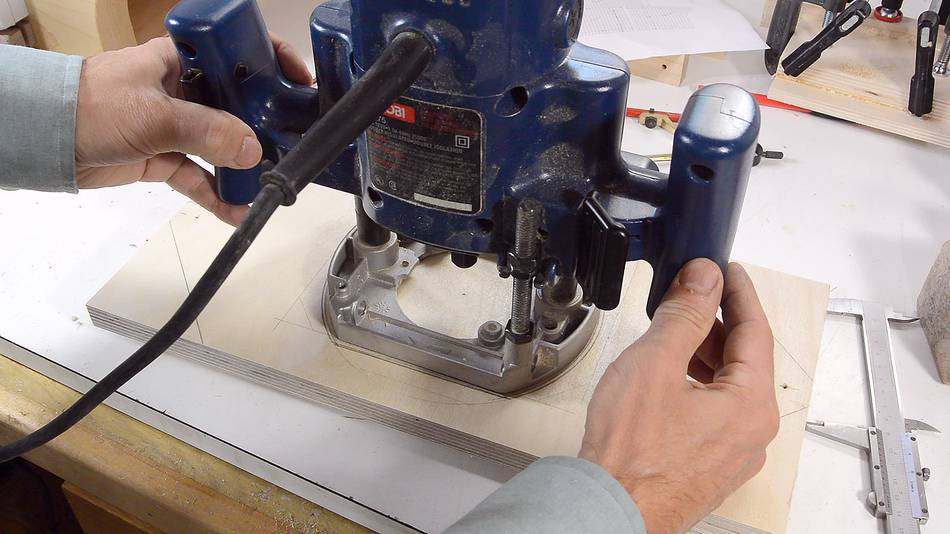
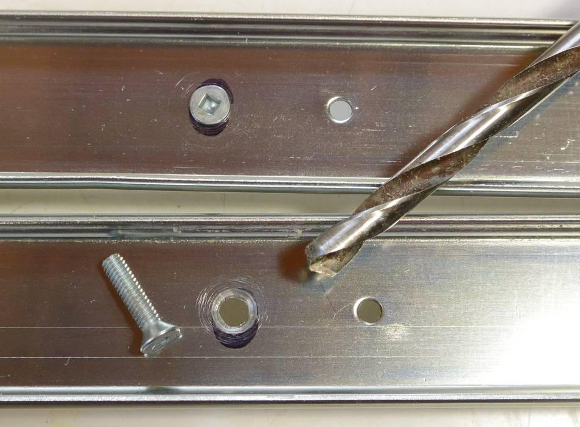
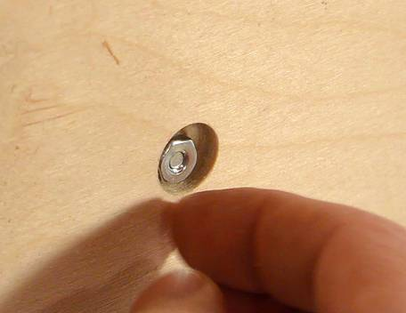
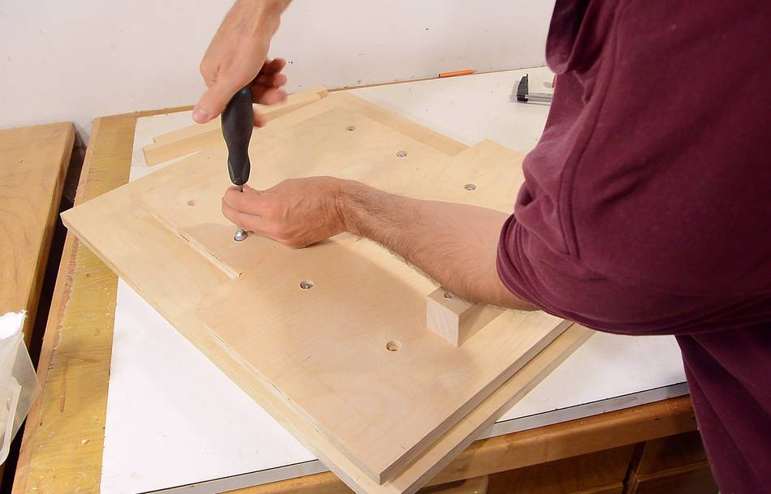
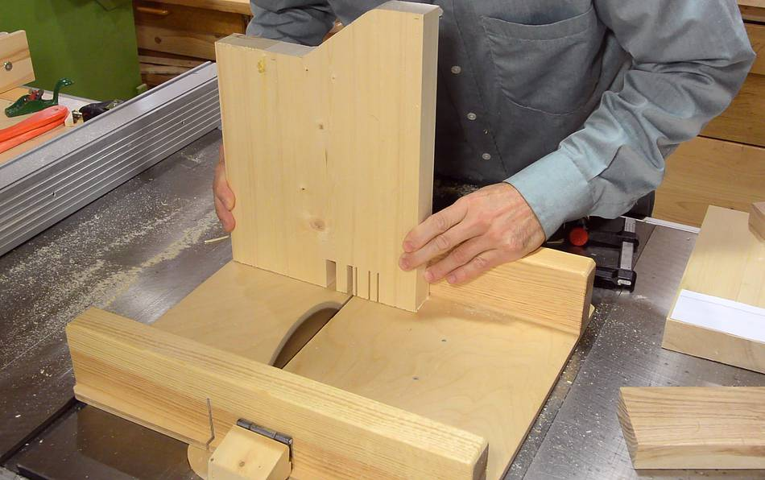

Building the pantorouter XL
Building the pantorouter XL pantograph
A frequently asked question from readers wanting to build
the pantorouter is where to get that style of router. This style
of router, with a motor that pulls out of interchangeable bases
(like
this one)
is hard to find outside of North America. This
is probably because other countries require that the router turn off when you
let go of the handle, and that necessitates putting the switch on the handles,
and that's difficult to do with the motor detaching from the base and handles.
Outside of Canada and USA, except for a few brands and models, routers
are plunge routers, with the body and handles often
consisting of one piece. This type of router is too bulky to fit
into the pantograph mechanism of my original pantorouter design.
So I designed the "Pantorouter XL", which has a larger pantograph
mechanism for mounting a plunge router, complete with handles,
in the pantograph.
I printed out my plans, including a sheet (pasted together from many pages)
with a lot of the parts in full size
using my
BigPrint program.
The long parts of the pantograph link are made from hard maple. Here,
I'm cutting the parts out of a piece of firewood.
Marking where the holes need to end up. These measurements
are very critical.
I'm marking both holes from the same end as a reference, to make sure
the spacing is exactly right.

The links will pivot on some 3/16" (5 mm) steel rod. Getting holes
of just the right fit is important. I drilled some test holes with
different 3/16" brad point bits, but these all drilled slightly
oversized, resulting in a fit that had a tiny amount of play in it.
The smaller the shafts are, the more easily the links pivot. But
since building it, I realized I should have made the long shaft that the
whole pantograph mounts on 1/4" (6 mm), as that shaft is prone to flexing.
But I think it's best to keep the other pins at 3/16" or 5 mm.
I have updated the drawings to reflect this, but in my build video series,
it's still a 3/16" shaft.
I ended up drilling the holes at 11/64 (1/64" or 0.4 mm smaller than I
needed), and then drilling the holes to final size using a regular
(not brad-point) drill bit.
This resulted in a very tight fit with the rod, which is what I was
aiming for.
The plywood pieces for the links are cut from Baltic birch plywood.
Here I'm getting ready to assemble them.
Freshly applied glue is very slippery, so to keep parts aligned, I clamp
on one of the long pieces to the plywood without any glue,
then apply glue to the thinner bottom layer...
... and glue on the next (18 mm) thick layer, using the clamped-only
piece to help align it.
Next I glue on the other long piece of hardwood.
One side of this has a 3/16" hole, the other a 1/4" hole. Make sure
both of the larger holes are on the same side! The same goes for the
short link.
I gave it a few minutes, the glue on the first joint set sufficiently
to no longer slide around. Then I removed the first (clamped but not glued)
piece of hardwood, and clamped on the second piece.
I wanted to remove that first piece of hardwood, otherwise, the glue
that squeezed out from gluing on the plywood would have made it very
difficult to remove later.
I used the same procedure to glue up the short pantograph link.
While waiting for the glue to dry, I can cut out the pieces of plywood
for the router mount. As with the other plywood in this machine, I'm using
baltic birch plywood, which is made of thin layers of birch throughout.

Rather than follow the dimensions in the CAD drawing, it's best to use the
geometry of your router base instead. This will make it easier to fit the
router later.
Cutting out the pieces on the bandsaw.
With the glue dry enough, I can now glue on the other rail to the
pantograph links (the rail that I initially only clamped but not glued on).
It's very important that the pieces align laterally. Here, I'm checking
that alignment with a square.
My original pantorouter has the control lever as a solid piece of wood, but
on this pantograph, the control lever would need to be much wider, and it would
be hard to drill the holes for the pins straight through. So I made
the control lever link similar to how I made the other pantograph links.
I ended up making it twice though, because the first one I first made was
too easy to twist, as I found out later. So I made the long rail of it
25mm wide instead of 18mm and extended the plywood a bit further.
The video shows me making the non-beefed-up version, because
I didn't realize I should beef it up until after I uploaded the video, and
it's always a bad idea to re-upload a nearly identical video.
The dado cut out of the plywood is for the pin that it pivots on to go through.
(the rails on either side have a hole right where that dado cut is)
Both pins that the control lever hinges on are 3/16" or 5 mm, so there's no
need to worry about putting the link on backwards.
Cutting up some pieces of 3/16" (5 mm) steel rod for three of the pivot pins.
The main pivot on the bottom (28.2 cm long) is 1/4" or 6 mm in diameter.
The 3/16 or 5 mm rods are 18.2, 15.7 amd 15.7 cm long.

With the pins fitting in the links
very tightly, I made a sort of reamer
out of a piece of the steel rod, by cutting a lengthwise slot near the end
with a hacksaw.

I then used that steel rod in a drill to expand the holes for a very snug and only
slightly tight fit.
The holes are not necessarily perfectly aligned with each other, so I take the
reamer, push it through the hole on one side, and then into the hole on the
other side. I do this coming in from both sides to get both holes into
alignment.
A number of people have "improved" on my design by drilling larger holes and
using bronze bushings in the holes. But that means you can't use this trick
to get the holes fully aligned. The bronze bushings do last longer. A steel
rod in a wooden hole might wear out after cutting as few as ten thousand joints.
But if you are at all concerned about wear, put oil in the holes and polish the
rods, and it should last much longer.

First test assembly of the pantograph mechanism.
(note: showing my not-final design of the control lever)
Fitting that blue Ryobi plunge router is a challenge. The handles are
not detachable and very bulky. I first thought it wouldn't fit (with
the pantograph tilted by just over 45 degrees from square).
But then I realized, in my design, the pantograph
only needs to tilt by 30 degrees off square. Here I added some blocks
of wood below the router mount to limit the tilt to just over 30 degrees
off right angle.
At that tilt angle, the handles do not
interfere with the links - though they do interfere with the back
plate.
The pantograph needs to be mounted on a base, and the base has two corners cut
away to fit in the machine, as designed. I mostly cut these on the table saw, then
finished the corner cuts on the bandsaw.
Drilling the holes in the mounting blocks for the pantograph.
These need to be very square. To compensate for any non-square-ness that my drill
press may have, I drill the hole about 5 mm in then rotate the block 180 degrees
(around the axis of the drill bit) and drill another 5 mm, repeating until
I'm all the way through. If the drill press table has any tilt error, every
180-degree rotation effectively reverses that.
But one of the holes was still not quite square. The piece did not lie flush
against the pantograph link once it was on the shaft. So I drilled another hole,
and another, and by the fourth hole, I had one that was sufficiently square.
I think the grain of the wood, running diagonally, pulled the drill to the
side a little.
I have to make sure the axis of the pantograph is exactly square to the back and parallel
to the sides. I start by marking a line with a square.
A pencil mark, directly below the hole, on the link, allows me to line it up.
I then mark the hole locations by inserting screws in the holes, and tapping them
down with a hammer. The point of the screws makes a divot in the wood to mark
where to drill the pilot holes.
Getting the location for the front mount. I used two scraps of 18 mm birch
plywood as spacers behind and in front of the pantograph to leave sufficient
room for the spring cams that will help compensate for the weight of the router
later.
I lined up the front mount to the pencil line the same way as the back one.
Then, inserting screws in the holes, and tapping the screws with a screwdriver
and hammer, I mark the locations.
Drilling pilot holes.
I find the drywall screws I use fit exactly in a 9/64" (3.57 mm)hole. I'm
drilling the pilot with a 7/64" (2.78 mm) diameter.
Mounting the pantograph.
Some scraps of wood with slots cut in them will ensure the pantograph doesn't
slide forwards and back for now.
Although the Ryobi router would fit, I used another plunge router with
a broken switch. With a broken switch, that router wouldn't be of much
use for other jobs anymore.
Most people mount routers in jigs by screwing the base to a piece of
plywood. This method would work for this mount as well, but I'd lose a little bit
of depth of cut. So instead, I'm mounting it by two metal rods. Nearly all router
bases have holes for two metal rods, for use with various jigs.
The metal rods need to be mounted to the front of the router mount. Here, I'm
drilling two holes in two pieces of wood at exactly the right distance
for the two metal rods.
After that, I slice off part of the blocks, so that I have about 0.5 mm
of the hole cut away.
I used a compass to mark the same distance from each hole to make sure I had the
center between the two holes, then lined that up with a center line
on the front mount. This will ensure that the router's collet will end up
on the center line between the two pivot points.
I put screws in the screw holes, tapped them with a hammer, then used the divots
from that to drill pilot holes for the screws in the plywood.
This mounts the router securely to the front part of the mount, but I need support
to keep the front from pivoting. So I made some pieces
of plywood that reach around the router's handles. With this router,
I could have just unscrewed the handles as well.
Screwing the pieces together.
Now installing the router mount in the pantograph.
It turns out, the pieces of plywood to link the front and back hit the
pantograph links, and I couldn't quite tilt it 30 degrees off-square.
But it was only a little bit off, so just chamfering the edges of the
plywood pieces that hit the links allowed me to get 30 degrees tilt again.
I'm still missing the template holder, stock holding table, plunge
mechanism, and other bits. But the pantograph is the core of
the machine, and I was keen on trying it out. So I used some
wooden boxes to hold the template and stock.
I used a
follower and template that I made earlier.
Big tenon milled out. Looking good.
Making linear glides for the plunge mechanism
Having
built the pantograph mechanism
for my new pantorouter XL,
I next need some linear glides to allow the base that the pantograph
mounts to move forwards and back (parallel to the router's axis)
But this pantorouter is designed to take a plunge router, so why
not just just use the router's own plunge mechanism for the plunge
action?
The problem with the plunge mechanism on the router itself is that it's
difficult to activate and it doesn't have enough plunge range.
With the pantorouter, when cutting tenons, those are typically cut with
the stock overhanging the end of the table (shown at left). But when cutting
mortises, the stock is mounted on the table, so the router needs to come
further forward to plunge above the table.
The router's own plunge mechanism doesn't have enough travel to allow for
both.
A good solution for the plunge action is to use polished steel rods
and linear bearings, as is done with the
all metal
pantorouter. But these are expensive, and you can't just walk into
your local hardware store and buy them.
Another downside of linear glides is that they add a lot of height.
I'm going to use drawer glides. However, full extension slides, such
as the one shown at left, with two glides telescoping tend to have too
much play in them and are unsuitable. Unfortunately, most full extension
drawer slides are of this variety, so you have to look around to find a
slide that is suitable.
Suitable for this type of work are glides with just one set of balls.
These include good quality keyboard drawer slides, older style two-tier
full extension drawer slides, and center drawer glides. The slide
at the bottom of the photo is a full extension slide that is
not
suitable.
The center drawer slides (one still in the package at left) are a good
find, in that they are very close to what I need. I found these at
Lowes. And Lowes also sells the springs you will need for a later part
of the build, so it's worth a visit (Home Depot sells neither part).
The center drawer slides have a mounting piece that is easy to pull
off one end. And the slides themselves can also be separated by
pulling hard on them.
With the inside part pulled out, we have what I like to call the "ball
cage" which holds the bearing balls in place. Metal tabs on either end of
the outside track keep the ball cage from moving too far.
For these modifications, I need remove one of the tabs (arrow in red).
I ground it off with a bench grinder. I could have flattened it
with a hammer as well, but that risks bending the track.
The particles from grinding have contaminated the grease on the
track, so I'm wiping all the grease off for now.
I only need 12 cm range of motion. To beef up the linear
glide, I'm going to add another ball cage. I'm taking these off some
other ball glides that I pulled out of the garbage. Fortunately, most of
the good quality ball glides have the same profile and ball size.
Cutting the extra ball cage to length. I need a total length of
33 cm between the two of them.

Also cutting the outside track to length. I want it to be about
43 cm in length.
The hacksaw leaves a bit of a burr on the metal, so I'm cleaning
the edge with a file.
Having cut the inside track to the right length, I cut some slots in the
end of it and am bent a tab on it. This hook catches the ball cages
and will help keep them in place.
Last time I
adapted some linear glides, the glides I used had a small amount of
play in them. I eliminated that by squeezing the track together a bit in
a vise - being careful to not over-squeeze it (with lots of squeezing
and testing), and always making sure the balls are not where the track
is being squeezed. You may have to do this with yours. The tracks I
bought from Lowes were tight to begin with, so this wasn't necessary.
Next I need to drill mounting holes. That is done with the tracks
completely disassembled. With one of the limit stops ground off earlier,
I can pull the glide completely apart, catching all the ball-bearing
balls in a container as they come out.
I'm mostly using existing holes, but a few new holes need to be drilled
as well. I'm using calipers to scratch where the new holes go,
measuring from the existing holes. This way, I'm able to establish the
new hole locations very consistently.
I then use a center punch to put a divot where the holes need to go.
The divot helps to guide the drill in the right place. Without a divot
in the metal, the spinning drill would wander a bit before starting to drill.
It's really nearly impossible to start an accurate hole without a divot.

I drilled a small (1/8" or 3 mm) pilot hole, then a larger hole for the
screws, and then used the tip of a larger drill to chamfer the edges of
the holes for mounting some countersink screws. I'm using 8-32 screws
(for Metric countries, use M5 screws)

Finally, de-burring some of the holes with a larger drill in my hand
drill, with just light pressure applied and letting the bit spin for a few
turns against the holes.
Next I need to mount the wider outside tracks to the bottom of the
"sled" that the pantograph mounts on. These need to be spaced 26 cm
apart and need to be exactly parallel.
I made two spacers on the table saw. These are designed to catch
the same edge of both slides, so that the center to center spacing
will be the same, regardless of the slide width. I cut these from
one piece of wood, then cut that down the middle to make sure
I had two spacers of exactly the same length.
I then use these to position the glides just right...
...then mark where the holes need to go...
... and use an awl to put a divot at the center of each mark.
I drill holes for the screws, 3/16" (5 mm) in diameter. This leaves a
bit of slack for the #8 screws so that I can make fine adjustments
later.
I also drill a 5/8" (16 mm) hole from the opposite side, deep enough
for a nut and washer to fit below the surface. Make sure your nut
driver or socket set fits in the holes (or drill the holes larger)
Screwing the rails on. Getting the nuts and washers on is always a
fiddly task. I use a nut-driver to tighten the nut in the hole.
Next I need to mount the inside tracks on the base of the machine.
These are slightly shorter. The idea is, as the top slides back and
forth, the track below will always be covered by the table above it.
I'm using the same spacers to lay these out as I did for the sliding
part. Because they both reference the same edge on both parts, they
still produce the same spacing for the narrower tracks.

Again, getting the nuts and washers into the holes is a fiddly affair.
Now putting the ball cages and balls back in. Getting the balls in is
also fiddly. I cleaned the tracks, ball cages
and balls of any grease, seeing that all my other work may have
contaminated the grease.
I'm not re-adding any grease for the time being, because this is not the
final assembly.
It works reasonably well to hold a ball from either side with each hand
as and push the ball cage in by one ball increment at a time. I'm only
placing a ball in every third position for now.

In the original slides, tabs prevented the ball cages from sliding out of
the outside track. But with one of the tabs ground off, I added a screw
at the end of the track to keep the ball cage from coming out. I put
that screw towards the side because it was the only safe place to be
clear of the middle track, with its tab that also has to move past
the end of the track.
I'm mating the tracks together. The tracks on the base are parallel
and firmly screwed down, while the tracks on the sled have the screws
left loose.

Once the two parts are slid together, the slack in the mount should now
allow the tracks to mate precisely. I can now tighten the screws in the
sled to make sure everything is locked in place.
Glides complete.
An advantage of using ball glides is that they slide easily, even under
pressure. That way, I can push the plunge slide forward and back from
the side without risk of racking (jamming diagonally).
Next step is to build the table and template holder.
Building the table and template holder
Building the table
Having built the
pantograph and
sliding base, I need
something to hold the stock in front of the router and
something to hold a template behind the pantograph.
I'll start with the table on the front. The design for this is almost
the same as in my
previous pantorouter.
I prepared by gluing some pieces of wood together to get the full height
needed for the table supports.
Instead of using a 1:1 printout of the whole sides, I made separate
1:1 printouts of just the joints for this table (I'll include those
in the plans). I paste these on the joined edges of the table pieces.
With the template glued on, I line it up one edge of one of the slots
with the saw blade, on my table saw sled.
Clamping a block of wood to the sled as a side stop
The slots and fingers are 13 mm wide, so I made two 26 mm wide blocks.
Inserting one of these between the stop block and the work piece allows
me to make the next cut without having to line things up by eye.
Then another block inserted, and the next cut made.
Next I line the blade up with the other side of a slot and repeat
the same procedure with both workpieces.

I hog out the material for the rest of the slot by making a series of cuts
with the saw blade, just positioning the workpiece freehand for each cut.
Next the fingers on the part that links the two pieces together.
Same procedure with the spacers.
Having cut the joints, the fingers were too wide to fit, so I positioned
the stop block to shave half a millimeter off each finger, again
using the spacers to position for each finger.
Gluing it together.
No need to clamp these joints, but I used one of my
clamping squares
to make sure the first joint stayed square as I glued the second one.
With my other pantorouter, I often found shavings accumulating in the
corner circled here.
So I cut out a notch in the corners of the table support, just with
a 45-degree cut on the table saw, then chip out the rest with a chisel.
The table top has a grid of holes in it for mounting the clamp onto.
I could have used a 1:1 template to mark these, but drawing the grid was
easy enough and saved me the trouble of peeling the paper off afterwards.
I'm using an awl, tapped with a hammer, to put a divot on each grid intersection...
... then using a 25/64" (just slightly bigger than 3/8") drill to drill out the holes.
After that, I use a countersink bit to chamfer the edges of the holes.
And attaching the table top. I'm only using four short screws for
the time being because I'll take it all apart again for varnishing later.
The table itself is screwed onto the base from the bottom, though I took no
photos of that.
Building the template holder

Next comes the template holder (highlighted in orange) which sits behind
the pantograph.
I initially designed these joints to be cut with my
screw advance box joint jig,
but I wanted this machine to be easier to build for people who don't have
my fancy jigs. So I had the idea of using the same method that I used to cut the
joints for the table. But to make it easier, I changed the fingers to be 8 mm
wide from 6 mm.
I made some spacer blocks, one 16 mm wide (one finger + one space) and two
32 mm wide (two fingers and two spaces).
With the three spacers I can make any multiple of 16 mm. This way I
get less cumulative error than using five equal blocks.
I knew the first slot leaves an 8 mm finger, so with the spacers in place,
I used my calipers to position the stop block so that there were 8 mm
between the last block and the blade.
I didn't bother pasting the templates onto the wood.
Cutting the fingers. First cutting the horizontal pieces, cutting the
slots in each end. Then moving the block so that the next cut is the
other side of each 8 mm wide slot, then placing it freehand to make
two more cuts in between to hog out the 8 mm widths.
Except I made a mistake. When I cut the joints on the verticals
pieces, after having cut the horizontal ones, I didn't offset
them correctly. I should have started with the first 8 mm from
the edge cut away. So I had to make these pieces a second time.
Test fitting the joints.
The vertical pieces are narrower at the top, but I hadn't cut
this away initially.
I cut the straight part of this cut on the table saw, then cut the angled
part of the cut on the bandsaw.
The bottom horizontal piece also has a big square cut-out to make room
for the rear mounting block for the pantograph.
I also need to cut some slots into the template holder.
I'd normally cut these with my
slot mortiser,
but again, I have to make sure the machine is buildable without all my
jigs. So I figured I should cut this out with a plunge router.
To make the work a bit easier, I hogged out some of the material by
drilling a series of 1/4" holes where the slots need to go.
It is possible to
hog out a slot strictly with a drill press, but it always
ends up messy looking.
I then remove the rest of the material with a plunge router. The router
has an attached fence to help me guide it.
I'm using a 3/8" straight router bit. I have to route from both sides
to make it all the way through.
Slots cut. The alignment wasn't perfect. I could have cut the slots
faster and in less time using my slot mortiser.
Finally, I drill the mounting holes in the bottom horizontal (I didn't
take any photos of that), and then glue the frame together.
After putting it together, I leave the frame lying flat on the table,
so that I don't accidentally introduce any twist with the clamps.
I also glue a strip of wood to the top, which gives me more room for clamping
templates on, especially when attaching templates with just clamps.
Placing screws in the mounting holes, and tapping them with a hammer to mark
the pilot hole locations.
Ideally, I'd drill the pilot holes on a drill press, but I didn't want to
take the whole thing apart again, so I'm drilling them freehand.
Then screwing on the template holder. Just four screws for now,
because I'll have to take it all apart again later for varnishing.
The pantorouter so far. I'm keen to try it out, and I really need
something to clamp the
followers to do a good job of that, so that's next
The follower clamp is a small block of wood that clamps to the operating lever.
I'm using a paper template for the shape of it. It needs to be very precisely
made, to make sure the follower bearing doesn't mount crooked on the operating
lever.
A hole goes through the side to allow a bolt and knob to squeeze the block
together, clamping the 1/4" (6 mm) shaft for the follower bearing in place.
Testing it out, using a multiple-mortise template. I first made this template
for some joints for a
mirror stand.
And carving the multiple tenon joint to go into the multiple mortise joint.
The fit was less than perfect. I must have some minor geometry error in the
pantograph. I will have to check that later.
Pantorouter plunge controls and router springs
Making the plunge lever
I made printouts of some of the parts for the plunge mechanism.
The shape of the lever is simple enough that I can transfer the
measurements onto a piece of wood rather than paste the template on.
Here cutting the straight parts on the tablesaw...
... then cutting the rest of it on the bandsaw.
A series of holes needs to be drilled in the end of the lever, to allow
me to mount it slightly further out if I want to later.
I just mark the holes off the 1:1 drawing, then drill and countersink them on
the drill press.

Next the operating handle. I round the edges of the handle part of the
lever. The other end needs to have a notch cut out of it to couple with
the link I just built.
The operating lever couples to the link as shown. For the lever's main pivot,
I'm using a #10 wood screw, which screws into the template holder.
The hinge with the link could be a piece of steel rod or a wood screw.
I'm using part of a knock-down fastener screw. I like the large head
on it, and the smooth shank will make a nice pivot.
I cut the screw to length, then chamfer the ends to make it easier to
screw into a slightly undersized hole.
The screw threads end up engaging only the other side of the operating lever,
allowing the link in the middle to pivot freely around the smooth part
of the screw's shank.
The lever and link mount on the pantorouter right here, but I will leave
them off for now so I can work on the plunge depth stops.
Making the plunge depth stops
The depth stop mechanism is made from four blocks of wood.
I cut the basic rectangular shape of these on the table saw, and here
I'm checking the size against the 1:1 drawings.
Then drilling all the holes for the shaft and screws. Three of the blocks
get a hole the same size as the shaft (1/4" or 6 mm), but the largest gets
9/32" (1/32" larger than the shaft), so that the shaft will slide freely
in the hole. For metric countries, drill the hole 1 mm larger than the shaft.
When I built mine. I used a 3/16" (5 mm) shaft, but I changed the design to 1/4"
(6 mm) shaft to make this part stiffer.
All the 1/4" (6 mm) holes get a slot cut into them to allow the
block to clamp down on the shaft. Also, a few other bits are cut off to shape the blocks
This is how the plunge stops fit on the pantorouter. The block at left
secures the shaft to the sled. The large block at right is screwed to the
table, and the two small blocks clamp onto the shaft to provide depth stops.

In the plans, I have a 1/4" (M6) carriage bolt and threaded knob to clamp
the blocks onto the shaft, similar to the one shown at left.
But I have these screw knobs that I have been
meaning to use for something. They are a bit too short to use with a nut
on the other side, but a T-nut extends them enough to be just right.
Unfortunately, the knobs have an M6 thread, and the closest I have is
1/4" T-nuts. The T-nut almost fits. So I ran an M6 thread tap into the T-nuts,
and now the metric threaded knob screws in just fine.

I place the T-nut over the hole, then tap it with a hammer to mark
where the prongs end up...
... then drill holes for the prongs, large enough for the prongs
to loosely fit into.
T-nut and knob mounted on the block.
Now mounting the block that holds the shaft to the plunge sled.
And mounting the other block to the table. The hole in this
block is larger so that the shaft can slide freely.
The small blocks are then clamped to the shaft to serve as stops.
And the plunge lever can now be mounted right above the depth stops.
Router weight counterbalance
Gravity always pulls the router down. Though the operating lever
provides a 2:1 advantage, lifting up the router by the operating lever
is still tiring over time. To help lift the router up, I'll be adding
springs that push the two pantograph links up, which in turn lifts up
the router.
Two cam-shapes for a string to wrap around are cut from Baltic birch,
using 1:1 templates, on the bandsaw.
A screw on the inside corner of these will allow a loop of string to hook
onto them.
I removed the table and template holder to mount these. It makes it
easier to show how I did it, and easier to mount them.
One of these spring cams mounts to the front. It goes on the main shaft
and also screws onto the long link.
The other cam just slides onto the shafts of the pantograph. Its holes
are slightly larger (9/32" instead of 1/4", or 6.5 mm instead of 6 mm)
The springs I bought at Lowes are slightly too long, so instead of using the loops
at the end, I'm bending the last loop to the side on the vise, using a piece of wood
and a hammer, then cutting off the original end loop.
The sideways-bent loop screws to the edge of the plywood.
And some string (sash cord) ties the spring to the screw on the cam.
With the link pivoted all the way to the other side, the spring
has quite a bit of stretch to it. Imagine the long link held in a
fixed position, this spring will effectively pull the short link to
lift up the router.
The other spring cam is on the front. The spring needs to go under the shaft
for the plunge depth stops. I hadn't drawn how the spring attaches on that
end yet, and the spring is long enough that it needs to go under this shaft.
I had to carve out a notch to make room for it. I moved the shaft for the
depth stops a bit higher in the plans, so you shouldn't need to carve
a notch to make room for the spring.
The front spring just barely fits with the router mount. Space is tight,
but I didn't want to make the machine any bigger than it needs to be.
The springs aren't strong enough to counteract the full weight of the router.
Even though it's a smaller router, it probably isn't any lighter than
the motor-only unit of a full-sized interchangeable base router
that I used on my other machine.
And another minor touch, a piece of dowel as an operator handle.
Ready for some more testing. Here cutting a tenon. A sizable tenon for
such a small router, but I can take it in steps.
And the corresponding mortise cut. Makes a nice pop when the tenon is pulled
out of the mortise quickly.
Pantorouter XL final assembly
I like to varnish a machine once it's done. It makes the sawdust easir to brush off,
prevents it from getting stained with dirt, and makes it look nicer.
So I took the machine all apart again for varnishing and final touches.
Before varnishing the base, I still needed to glue some dust guards
on. These ar wooden rails, about a quarter millimeter (0.010") less tall than
the drawer slides. They prevent dust from getting into the glides from the sides.
I clamped these on with some long clamps. If you don't have clamps long enough,
you could put a screw through the mounting holes for the tracks to help push
them down for gluing, or just weigh them down.
When I previously assembled the table, I lined up the narrow tracks on the base
precisely, and let the larger tracks on the sled (right side) align themselves to
those.
But with the wooden dust guards on the base, I can no longer put my spacers against
the rails in the base, so I ensured the rails in the sled were aligned (image at right),
and left the screws in the base loose to let those rails align with those.
Before putting it bach together, I oil all the ball tracks with some relatively
thick oil.
Sliding the top back in. after the initial 20 cm or so, the ball cages will have
hit the end of their run, and a lot of force is needed to drag the sled all the way in.
In fact, I ended up using a bar clamp to push it all the way.
I also made some dust guards for either end of the sled. These, for the most part,
prevent dust from getting in from the ends. However, with the plunge sled pulled
back, the sled extens beyond the base, so some dust could still get in from below.
I marked where the slots on these go straight off my part. To position it
precisely, I clamped it in place and drilled the screw hole though both parts...
Then added a countersink to the rail, and screwed it in place.
The pantograph parts, ready for reassembly.
It's easiest to get the shaft in hen the links are at 90 degrees to each other.
With the hole 1.5 cm from the end and from the sides, lining up the corners of the
links also lines up the holes.
It also helps to grind a slight taper to the ends of the rods.
Pantograph assembled. Inserting the last pin, on one side, the holes on the other
side lined up nearly perfectly. Very satisfying, and indicative that there should
not be any significant geometry erroror remaining.
Attaching the rods to the router. The router has one plastic knob
to lock down one of the rods, but two screw threads for set screws
for the other rod. I found some screws in my junk bin that fit.
I also removed the smooth plastic face from the front of the router.
The plastic face allows the router to glide better, but I don't need this, and
removing it gets me 2 mm closer to the router.
Fully assembled, with electrical switch installed.
Calibrating and adjusting for accuracy
While building the pantorouter, I made a few test joints.
The mortise and tenon joint at left worked out perfectly, but the
multiple mortise and tenon joint at right didn't fit as well as it
should.
The spacing between the tenons is a bit smaller than that of the
mortises, and I had to cut the joint with some slack (using a smaller follower)
to be able to assemble it at all.
The distortions would, to some extent, be the same for both sides
of the joint, except that I cut the tenon piece lying flat on the table
(with the tenons oriented vertically), whereas the mortises were oriented
horizontally. So it appears there is some distortion introduced by the
pantograph.
So far, I hadn't checked my pantograph components for accuracy,
so I suspected some might be a little bit off. But before
taking the pantograph apart, I figured I should check how the router
aligns with the table. I mounted a piece of 1/4" steel rod in the
router.
The rod rested flat on the table along the full width of the table, so
it appears that aspect is accurate.
But checking with a square, I could tell that it was not square to the
edge of the table. Also, plunging in and out, I could see the shaft
move to the side a little bit as the router moved forwards and bac,
so the router axis was also not parallel to the plunge.
Time to take the pantograph out of the machine. Pulling the shafts out
is difficult. I used the clamps from the
plunge
stops to grab the shafts as I pulled them out.
Using another shaft, and a mallet to drive the first shaft out works
too. Push the shaft half way through, then pull both shafts out from
either side.
Now checking the links for length and twist.
Twist is easy to check. With pins in the holes, I rest the links on
some straight pieces of wood on a flat surface. If it rocks back and
forth (like a wobbly chair), then the link has a twist.
I measured about 0.010" (about 0.25 mm) of rocking on the long link.
I measured the spacing between the shafts by hooking a tape measure
on one shaft, then measuring to the near edge of the other shaft.
Should be 36 cm to the near edge for the long link. This one is spot on.
One side of the short link was nearly half a millimeter too long,
but it also had some twist. The dial indicator showed 0.015" (0.3 mm)
of rocking. Given that it's a short link, that was a bit much.
The biggest inaccuracy I found was the length of the router mount link.
The shafts were a full 1.5 mm too far apart! That probably
accounts for most of the inaccuracy.

Rather than make the part again, I figured I should try to "fix" it.
First I cut a section of 3/16" x 3/16" maple square
on the table saw. Then I whittled it to an octagonal shape
using a small hand plane.
I used the octagonal piece as a dowel to plug the holes that
needed to be changed.
Driving a peg into the pantograph link's hole.
I gave the glue a day to dry before re-drilling.
Then carefully measuring where the hole
actually needs to be. I
used an awl to punch a divot in the new hole position. But now, how to
drill this without allowing the drill to wander?
So I drilled a hole in another piece of hardwood with the drill I wanted
to use. I then stuck the drill bit in that hole, with just the middle
of the drill's points protruding, and placed that point in the divot.
I then firmly clamped the piece of wood in place.
With the clamped on piece of wood guiding the drill, I was able
to re-drill a new, overlapping hole. It worked out ok, so I didn't need
to make a new piece.
I wasn't sure whether the error in the short link was worth fixing,
but I figured while I'm at it, I might as well try.
I glued a piece of dowel in the hole and gave that a day to dry.

The twist that I was trying to correct was really quite small, so I have
to be very accurate about marking to get it more accurate than it was.
With the piece supported on the
shafts in the other three positions, I used the point of a 3/16" drill
bit to scratch the center line of where the hole should be and
carefully measured the distance to the other shaft.
I then use the same technique as with the router mount link to make sure
the hole went in the right place.
Checking the plunge sled accuracy. The main pivot for the pantograph
was not perpendicular to the table edge, nor was it parallel to the
plunge direction. I checked it by measuring sideways movement with
a dial indicator while moving the plunge sled in and out.
My procedure to make sure the rails were parallel to each
other did not include making sure the plunge sled was aligned with the
rails. I also only used two screws instead of four on each rail, so
I had quite a bit of slack, and, though parallel, the rails were not square
to the wood when I tightened the nuts.
So I loosened the nuts, adjusted it, and retightened.
After that, everything was aligned.
Making the hold-down clamp
There are many options for clamping stock on the pantorouter, such as the
drill press hold-down clamp shown at right.
But my favourite way to clamp stock on the pantorouter is a wooden hold-down
clamp that I made, using a very cheap C-clamp with a coarse thread.

I started by milling a cavity into a piece of wood to fit around the top part of the
C-clamp. Your pantorouter can be handy for milling out a slot like this.
I had to remove the bar handle to fit it in the block. It took a few
iterations to get it to fit perfectly. I was lucky the that paint
rubbed off on the wood just a bit, so I could tell where I needed to carve away more
wood after each fitting.
Next I hat to cut the C-clamp apart. It really wasn't a very good clamp,
but I liked that it had a very coarse ACME thread, so that it doesn't take
many turns to open and close it.
Two drywall screws next to the clamp hold it in the cavity. I originally thought I might
mount it by drilling some holes in the clamp, but judging by the type of sparks
I got when I cut it with an angle grinder, I realized that the steel on this clamp
was relatively hard and would have been difficult to drill. Fortunately, drywall
screws, with their relatively wide flat head, were able to hold it from the side.
One of the reasons I didn't use that clamp much was because the end of the screw is
just a piece of sheet metal. The sheet metal has sharp edges and doesn't spin
freely enough, so it marks up the wood as it's tightened. At this point I was
tempted to cut up one of my better clamps to avoid that problem, but I
already carved out a cavity to fit this particular clamp.
So I figured making a new pressure pad was the easier route.
I don't have a metal lathe to shape the end of the screw.
So I spun the shaft up in my drill press, and used
an angle grinder to shape a knob on the end, plus a groove behind it. I'm really
surprised how well this crude technique actually works!
Two nails in the groove could hold the pressure pad onto the end of the screw

I used a block of maple for the new clamp head. Instead of two nails, I ground the head
off a nail and then bent it into a U shape.
There's nothing in the bottom of the pressure pad to push against the metal, it's just the
end of my bolt pushing against the wood. I used hard maple, so that should help. But this
hold down clamp won't see crazy amounts of pressure, so this should do.
The photo is from when I checked the fit. I rounded the corners on it after that photo
was taken.

I had to destroy the original bar that served as a clamp handle to get it out.
I had to take it out to be able to inset the clamp into the cavity. I also would
not have been able to mount the screw in my drill press without taking the handle out.
So now I had to make a new handle. I used
a piece of maple, with a hole just slightly smaller than the end of the shaft. I
pressed the end of it into the block and then drove a 1/8" (3 mm) diameter
pin through the hole to go through the hole in the shaft.
So now I had a bar with a hold down screw on one end. This bar needs to be mounted some
distance above the work table on my machine. I made a spacer to fasten this bar
above the table.
I drilled a hole for a bolt right on the edge of the spacer block. Basically, the bolt that
holds the clamp might as well be as far forward as it can be, so I'd get maximum leverage
from the bolt.

With my drill partially breaking out the front of the slot, I opened that slot
along its length on the bandsaw (looks better that way). I also added a dowel pin
to help align that block with the bar.
The bar can be put on the block in two different positions to vary how far it extends.
Mounting the bar and block on the table holds them together, so there's no need
to have any other means of attaching the block to the bar.
I made another knob to go on the end of the bolt that holds the hold down in place.
I cut it out of 3/4" (19 mm) Baltic birch, and mounted a T-nut in it.
I figured it would be best if this one had a different shape as the handle
for the screw. That way, I'd be less likely to absent mindedly loosen the whole
hold down when I only meant to loosen the stock.

With all the work adapting the cheap Chinese clamp to make it suitable,
it wouldn't be any less work to just start with a piece of 1/2" threaded rod instead.
That way it would not be necessary to carve a complicated cavity for the clamp,
and a simple T-nut would suffice.
Back to Main index
 Having built the pantograph,
plunge sled with
drawer glides, table, and template holder,
the pantorouter XL is basically operational, but it's not very convenient to use.
Having built the pantograph,
plunge sled with
drawer glides, table, and template holder,
the pantorouter XL is basically operational, but it's not very convenient to use.